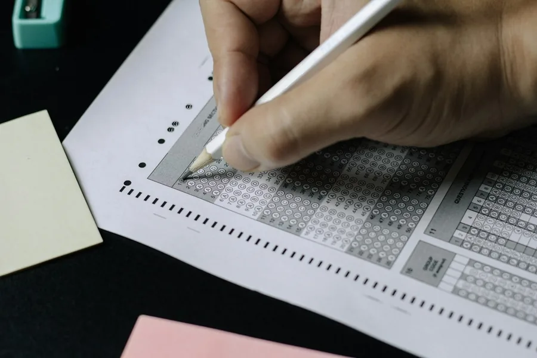

Vagas Oferecidas
Cursos de Especialização
Pública e Gratuita
13 Cursos de Especialização
Especializações Ofertadas no Concurso
Cronograma 2027
Previsão Turma 2027 • Baseado no Edital Unificado CMM Nº 1
Previsão 2027 • Itens 3.1 e 3.2 do Edital
Abertura Prevista das Inscrições
Pagamento da taxa de R$ 400,00 no PASSUFF (app.uff.br/pasuff) e inscrição no SISPOS (app.uff.br/sispos/candidatura) com PDFs de diploma, CPF e identidade oficial com naturalidade (não admitida CNH).
Solicitação de Isenção da Taxa (Item 2.2)
Exclusiva para inscritos no CadÚnico (Decretos nº 6.593/2008 e nº 11.016/2022) e servidores ativos/aposentados da UFF, mediante envio dos documentos em PDF (máx. 5 MB) para concursos.cmm@id.uff.br. Resultado previsto em 18/12/2026, a partir das 17h.
Período Previsto de Inscrições
Pagamento da taxa de R$ 400,00 no PASSUFF e inscrição obrigatória no SISPOS com envio dos documentos em PDF. Homologação prevista em 06/02/2027, a partir das 17h, em www.editais.uff.br.
1ª Etapa: Prova Escrita Presencial (Item 7.1)
Aplicação presencial na sede da Faculdade de Medicina da UFF (Rua Ataíde Parreiras, nº 100, Bairro de Fátima, Niterói), com distribuição por dia divulgada previamente. Resultado previsto em 03/03/2027, recursos até 04/03/2027 e convocação em 06/03/2027.
2ª Etapa: Documentos, Entrevista e/ou Análise Curricular (Item 9)
Entrega presencial do envelope pardo com Currículo Lattes, comprovantes e Histórico Escolar na Secretaria Geral de Pós-Graduação (6º andar) em 09/03/2027 (para cursos com análise curricular). Etapas presenciais entre 11/03 e 13/03/2027, com resultado em 13/03/2027 e recursos até 15/03/2027.
Resultado Final, Integração Obrigatória e Aulas (Itens 11 e 1.1)
Resultado final previsto em 18/03/2027. Participação obrigatória no Curso de Integração Acadêmica em 25/03/2027 (a ausência não justificada elimina o candidato). Início das aulas previsto para 30/03/2027 (01/04/2027 em Gerontologia e 24/04/2027 em Análises Clínicas).
Como Funciona a Seleção

Prova Escrita Presencial
Aplicada em Niterói (chegada mínima com 1h de antecedência, caneta azul ou preta transparente). O formato varia por curso (objetiva, discursiva, mista ou prática com projeção de imagens) com nota mínima 7,0 (ou 6,0 em Hematologia Clínica, Pediatria, Psiquiatria e Pneumologia), convocando até 3× o número de vagas.
Entrevista e/ou Análise de Currículo
Análises Clínicas e Dermatologia realizam apenas Análise Curricular; Cardiologia e Pneumologia realizam apenas Entrevista; os demais 9 cursos aplicam ambos. A entrevista individual dura até 20 min e a análise exige entrega prévia de Currículo Lattes, Histórico Escolar e comprovantes em envelope pardo (com originais na etapa).
Perguntas Frequentes
Especialize-se na Faculdade de Medicina da UFF.
Consulte todas as regras, critérios de avaliação e documentos exigidos diretamente no Edital Unificado CMM Nº 1 / 2025 e no Portal de Editais da UFF.